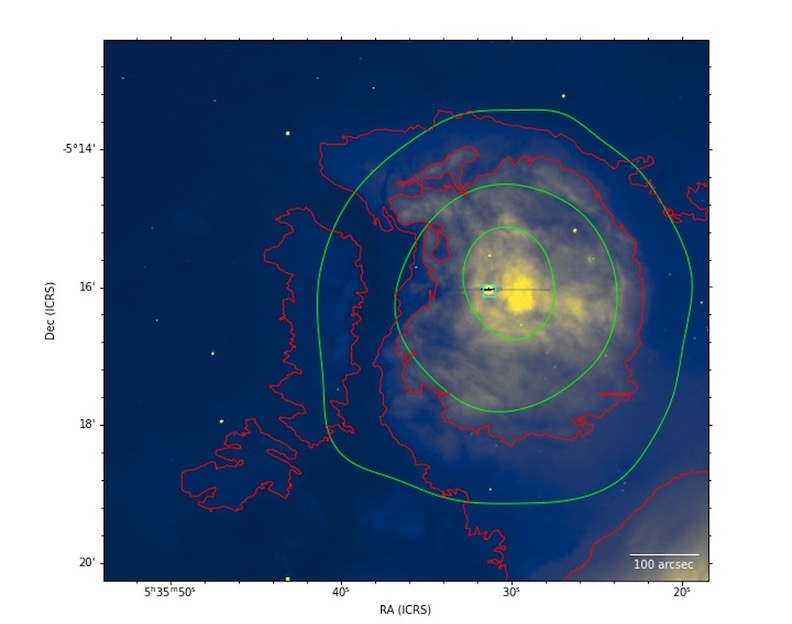

The Impact of M43 on the Orion A Molecular Cloud
My senior project consisted of an in-depth study of the M43 HII Region in the nearby high-mass star forming region Orion A Molecular Cloud. The analysis inovled determining the mass, kinetic energy, and momentum of the surrounding gas, and observing the behavior of the region's tracing gasses. The code written to do all the analysis is saved as a python package, h2reg, on my Github page. The final report and presentation are attached below. An image of M43 traced in H-alpha is shown below.
Final ReportFinal Presentation
